Getting started with R
Overview
In this course, we’ll learn research methods by actually working with data to conduct empirical analysis.
To do that we’ll use R, a free and open-source software environment for statistical computing and graphics. the graphical user interface R Studio.
Below are some steps to get you set up so that we can get started next class.
TLDR
If you’re pressed for time here’s the short version of what you should do before next class.
- Update your operating system
- Download R
- Download R Studio
- Open R Studio on your computer
- Create an Quarto Markdown Document (.qmd) in R Studio
- File > New File > Quarto Document
- Install any requested packages
- Render this .Qmd into an html file.
- Click the render arrow with the needle OR:
- Use the hot keys: Mac:
cmd + shift + kPC:crtl + shift + k
- Install some additional packages for the course
Specifically copy and paste the following into the console in R Studio and hit enter:
install.packages("rmarkdown")
install.packages("devtools")
install.packages("remotes")
remotes::install_github("kosukeimai/qss-package", build_vignettes = TRUE)
remotes::install_github("rstudio/learnr")
remotes::install_github("rstudio-education/gradethis")
remotes::install_github("PaulTestaBrown/qsslearnr")You’ll need to have the package rmarkdown installed for
remotes::install_github("kosukeimai/qss-package", build_vignettes = TRUE)To work, so make sure you’ve copied and pasted the code above into your console
If you have a question or somethings not working, don’t hesitate to ask. Please email me at paul_testa@brown.edu or come to my office at 111 Thayer St Rm 339.
1 Update your operating system
Before you do anything, please make sure you have installed the latest version of your operating system that is available for your machine:
On a PC: Start > Settings > Update & Security > Windows Update , and then select Check for updates
On a Mac: menu > System Settings, click General in the sidebar (you may need to scroll down), then click Software Update on the right.
A lot of installation errors that can occur in the steps below can often be solved by first updating your computer’s operating system (eg Windows, macOS).
If you’re still getting errors / having trouble installing R, R Studio, or related packages just shoot me an email!
2 Download R
- Download R here: https://cran.r-project.org/
- It should be
R version 4.4.2 (2024-10-31) -- "Pile of Leaves" - Make sure your operating systems are up to date.
- Mac: at least macOS 12 (Monterey) (Latest: macOS Sequoia 15.2 ). Note different versions for Intel vs Apple M1/M2/M3 chips
- PC: It should work on most versions you have installed
 - Just click yes, on everything the installer asks
- Just click yes, on everything the installer asks
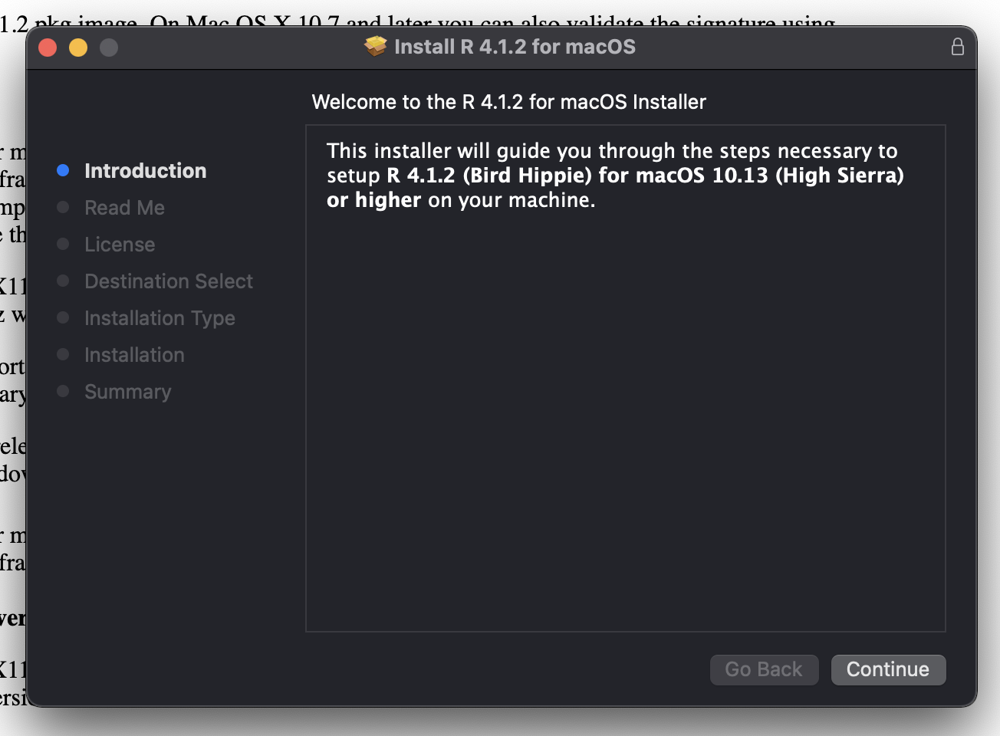
3 Download RStudio
Download the desktop version of RStudio here: https://posit.co/download/rstudio-desktop/
Scroll down till you get to something like this
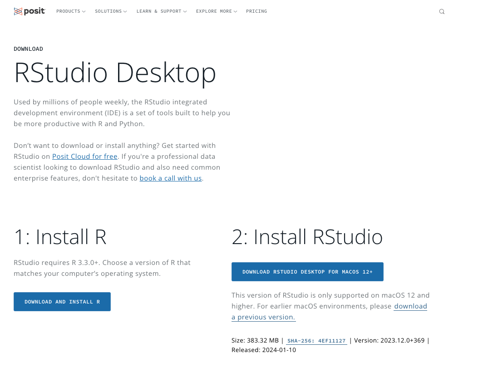
- If you’re on a Mac, make sure to move the RStudio.app into your Applications folder
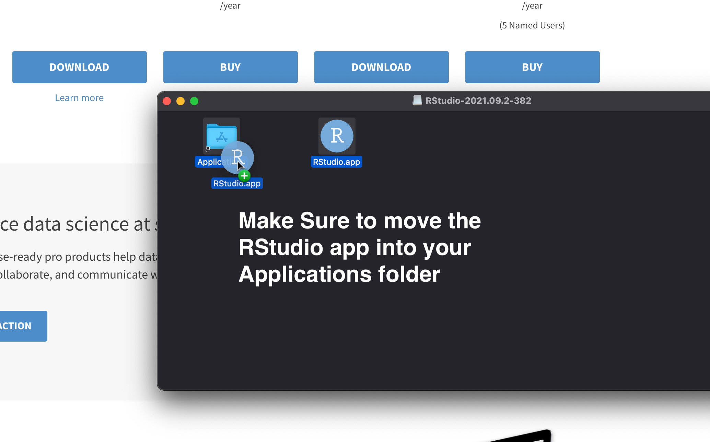
4 Open R Studio
- Open your applications folder/start menu and Open R Studio on your computer.
- There are four “panes” in R Studio corresponding to:
- Source/Text Editor in the top left is where you’ll write your code. Note: This will probably appear minimized when you first open RStudio
- Console in the bottom left where you’ll run your R code
- Workspace/Environment in the top right is a list of what you’ve done
- Files/Plots/Packages/Help/Viewer The bottom right is a collection of panels we’ll go over in class.
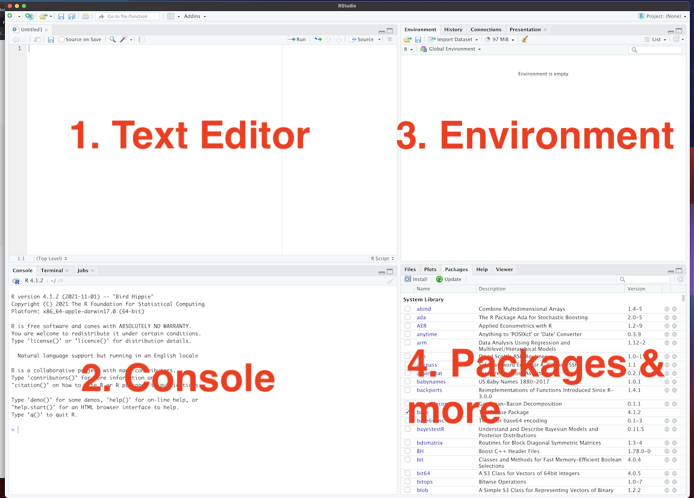
5 Create Your First Quarto Markdown Document
- Next, create a Quarto Markdown document (.qmd) by clicking Click File > New File > Quarto Document
Quarto Markdown is a file format that allows us to combine R code – which we use to do our statistical analysis – with Markdown – a lightweight markup language that can turn plain text into all sorts of formats (.pdf, .doc, .html)
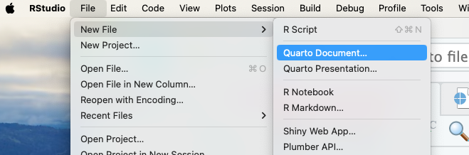
- You can also do this by clicking on the new file icon in the upper left

R Studio may (or may not) give you a pop up telling you you need to install additional packages. Please do so.
Once R Studio has finished installing some necessary packages, R Studio should ask you what kind of file you want to make, choose
html(the default) and fill in things like the title or author if you want.
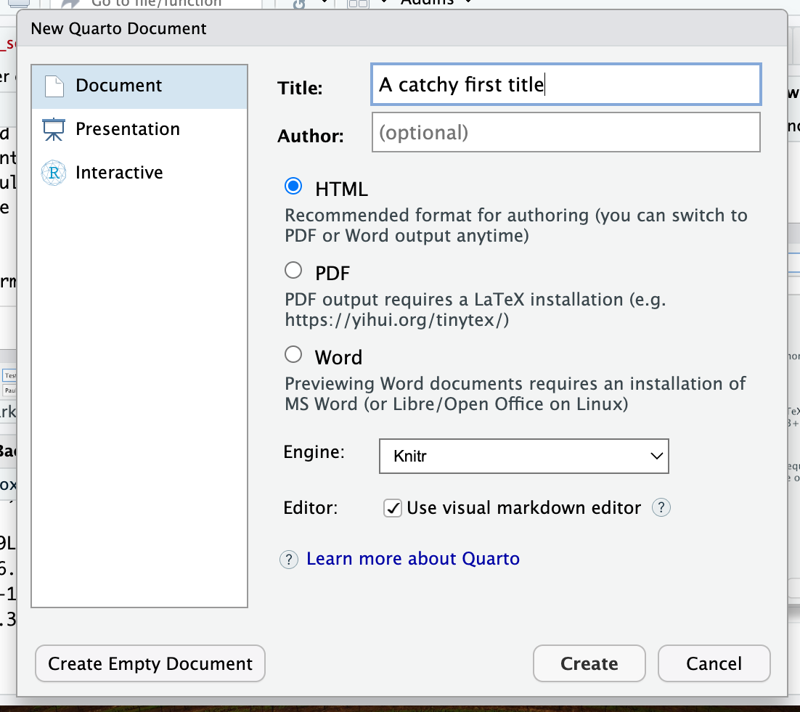
6 “Render” your Quarto Markdown Document to create an HTML file
-Click the render button in the Source/Text editor on the upper left and see what happens
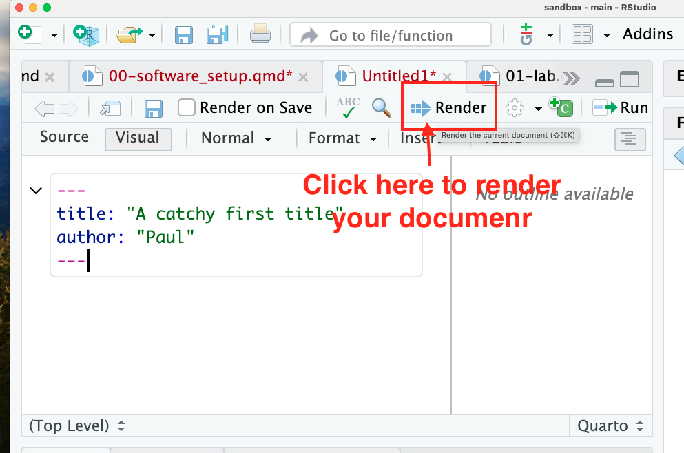
- In a perfect world, you’ll get a nice pretty looking html document
 On you’re machine, R turned your
On you’re machine, R turned your FILENAME.Rmd (I named mine test.Rmd) into FILNENAME.html.

Under the hood, it ran some software that ran your R code (stuff in the grey) and combined it with the markdown text (stuff in the white), to produce the final html file. If you click on that file, it will open in your web browser
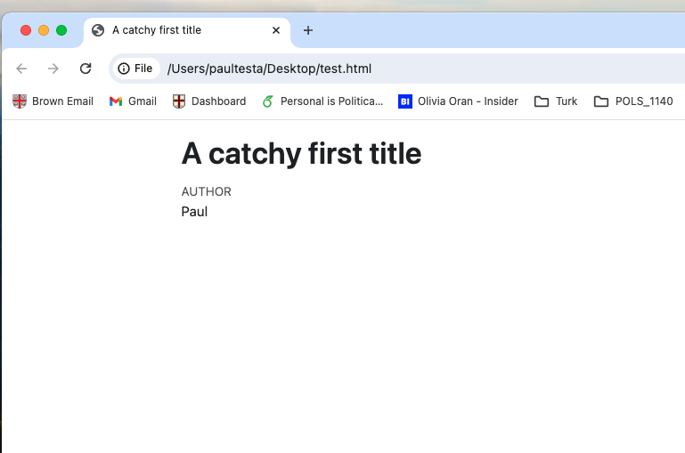
7 Install packages
- RStudio will likely ask you to install a bunch of packages on start up. Please do so. Get a coffee or check your email
- R will now install a bunch of packages (programs that do specific things). You only have to do this once.
- This may take a while and RStudio may ask you to choose a “mirror” (pick any one in the US). It may also give you an error. Don’t worry, email me.
7.1 Install the devtools and remotes packages
The version of R that you just downloaded is considered base R, which provides you with good but basic statistical computing and graphics powers.
To get the most out of R, you’ll need to install add-on packages, which are user-written to extend/expand your R capabilities.
Packages can live in one of two places:
- They may be carefully curated by CRAN (which involves a thorough submission and review process), and thus are easy install using
install.packages("name_of_package", dependencies = TRUE). - Alternatively, they may be available via the software sharing platform GitHub.
To download these packages, you first need to install the devtools and remotes packages.
install.packages("rmarkdown")
install.packages("devtools")
install.packages("remotes")Place your cursor in the console (lower left panel), and copy and paste each line of code above. After you’ve pasted a line, hit Enter/Return and R will execute (run) that line of code. So type:
install.packages(“devtools”)
Hit enter.
Then type
install.packages(“remotes”)
And hit enter again.
Each time, R will likely spit out some cryptic red text as it installs the packages.
When it’s done, R will you should see a line with a single > in the console.
You should be able to see the newly installed packages by scrolling through or searching the Packages pane on the bottom left

7.2 Install Packages for Course
Now we’ll use the intall_github() function from the remotes package, to install some packages we’ll use for this course.
Again, copy and paste each line of code into your console, and hit Enter/Return to run that code.
remotes::install_github("kosukeimai/qss-package", build_vignettes = TRUE)
remotes::install_github("rstudio/learnr")
remotes::install_github("rstudio-education/gradethis")
remotes::install_github("PaulTestaBrown/qsslearnr")We’ll go over this during our next meeting so don’t worry if this doesn’t work
You will likely be asked to update some existing packages
Type 1 in the console and hit enter

In particular, we’ll be using a version of Matthew Blackwell’s qsslearnr as problem sets for this course.
You can see the available problem sets by running the following code in your console:
learnr::run_tutorial(package = "qsslearnr")And start a tutorial by running:
learnr::run_tutorial("00-intro", package = "qsslearnr")To try and explain in words what this code is doing:
learnr::run_tutorial(Says use therun_tutorial()from thelearnrpackage"00-intro"tellsrun_tutorial()to run the"00-intro"tutorialpackage = "qsslearnr"tellsrun_tutorial()to look for this tutorial in theqsslearnrpackage.
If you run this code, you should see the following tutorial show up in the upper right panel:
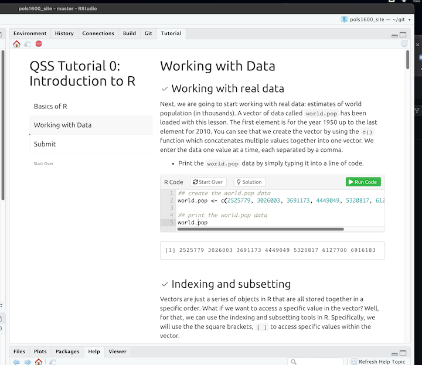
7.3 Optional: Adding a Tutorial Panel
You can also add a “Tutorial” panel to R Studio.
- Click on “Tools > Global Options”
- Alternatively you can use the hotkey combination
cmd + ,on a Maccntrl + ,… No Shortcut for PC :(
- Alternatively you can use the hotkey combination
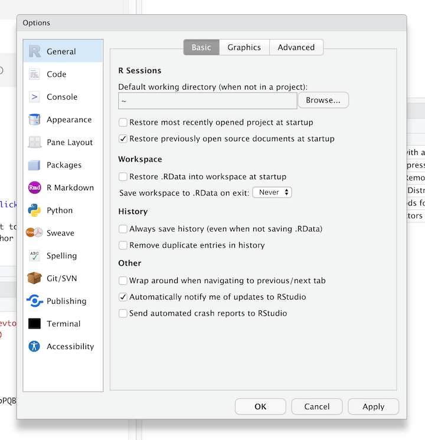
- Select the
Pain Layouttab. In the upper right of the four pains, check the box next toTutorial - You may need to close and re-open R Studio. When you do, in the upper right tab you should see:
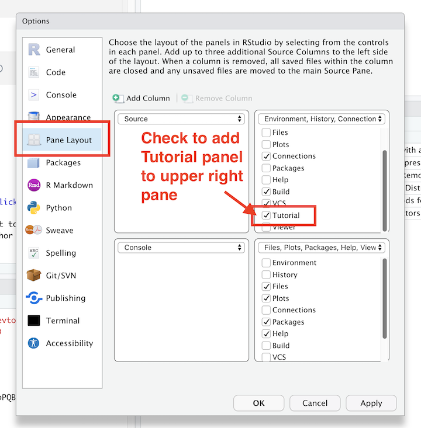
7.4 Optional: Adjusting Quarto / R Markdown Display Options
2+2[1] 4This is just personal perference, but while we’re changin some global options, I’d recommend
- Click on `RMarkdown
- Set “Show In Document Outline” to `All Sections and Chunks
- Uncheck the box that says “Show Output in line for all R Markdown Documents”
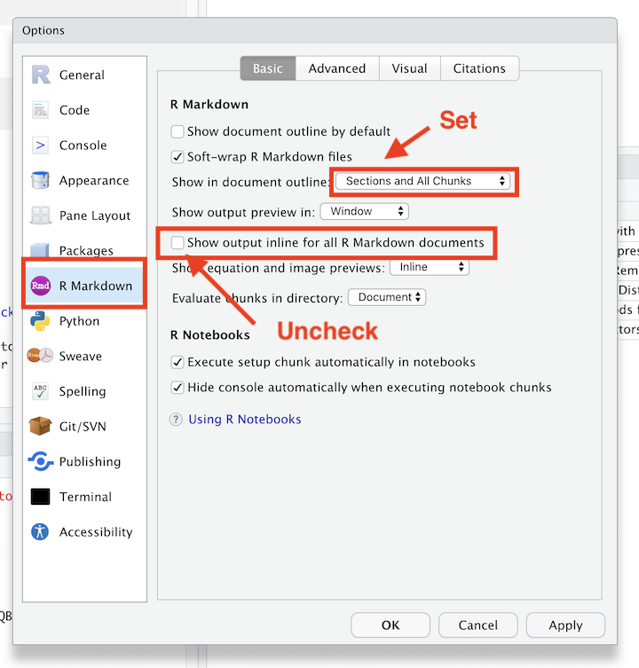
7.5 Optional: Don’t Save R History
Finally, in the R General tab, I’d strongly recommend unchecking the box that says “Always save R History”
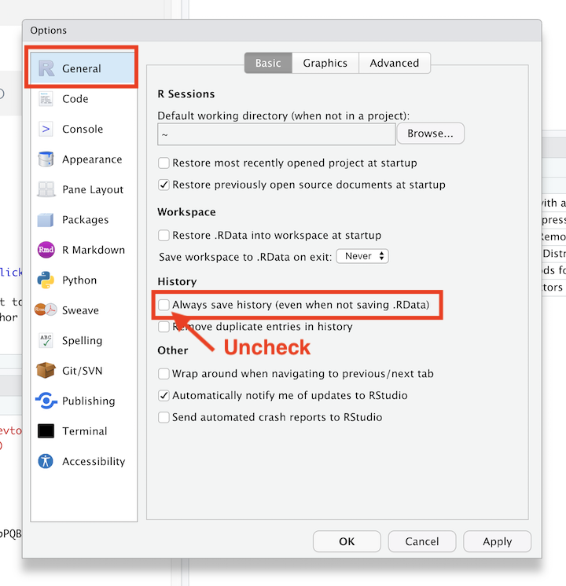
** Be sure to click OK** when you’re done updating these settings.
Summary
This guide has tried to help you get the software we’ll be using for this course set up. If everything’s gone as planned, you should have:
- Downloaded R
- Downloaded R Studio
- Created and compiled your first document using R Markdown
- Installed some packages
- Maybe changed some options in R Studio
Bravo! Seriously, this stuff isn’t easy, and I really appreciate the time you put in. It will make our subsequent classes more smoothly.
Of course, everything rarely goes as planned. If you got an error or things don’t work out. Don’t worry. This literally always happens for a multitude of reasons. I promise we’ll take care of things in our next class.
##Additional References {-}
If you simply can’t wait to get started, you might explore some of the following
R:
- http://r4ds.had.co.nz/ R for data science. A great reference for much of what we’ll be doing in the course
- https://cran.r-project.org/doc/manuals/R-intro.pdf A bit dense
- http://www.cyclismo.org/tutorial/R/ Nice intro
- http://swirlstats.com/ Same
- http://www.burns-stat.com/pages/Tutor/R_inferno.pdf More programmy
R Markdown:
- http://rmarkdown.rstudio.com/lesson-1.html Skip to the cheatsheets
General:
- http://www.google.com Seriously, if you have a problem or error, chances are someone else has.
- http://stackoverflow.com/questions/tagged/r Programming specific
- http://stats.stackexchange.com/ Stats specific